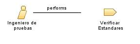

| Role: Ingeniero de pruebas |
| |
 |
| El Ingeniero de Pruebas en el proceso de la frutería se encarga de asegurar la calidad y funcionalidad del sistema de compra de insumos a proveedores mediante la realización de pruebas exhaustivas |
| Synonyms: Especialista en Pruebas de Software, Analista de Pruebas, Ingeniero de Calidad de Software |
|
Relationships
 |
| Primary Performs |
|
| Modifies |
|
Main Description
| El Ingeniero de Pruebas en el proceso de la frutería desarrolla estrategias de prueba, diseña casos de prueba, y ejecuta
pruebas funcionales y de rendimiento para verificar la calidad del software. Trabaja en colaboración con el equipo de
desarrollo y los analistas de negocio para comprender los requisitos del sistema y garantizar que se cumplan todos los
criterios de aceptación. Además, registra y documenta los resultados de las pruebas, identifica y reporta los errores
encontrados, y colabora en su corrección y verificación. El Ingeniero de Pruebas también puede participar en la
automatización de pruebas para mejorar la eficiencia y la cobertura de las pruebas |
Staffing
| Skills | Conocimiento de técnicas de prueba y metodologías de aseguramiento de la calidad, habilidades de análisis y resolución de
problemas, capacidad para trabajar en equipo y comunicar de manera efectiva, experiencia en herramientas de automatización
de pruebas |
| Assignment Approaches | Desarrollar estrategias y planes de prueba para el sistema, diseñar casos de prueba y escenarios de prueba relevantes,
ejecutar pruebas funcionales y de rendimiento, documentar y reportar los resultados de las pruebas, colaborar en la
corrección y verificación de errores, automatizar pruebas cuando sea posible para mejorar la eficiencia y la cobertura de
las pruebas |
| Synonyms | Especialista en Pruebas de Software, Analista de Pruebas, Ingeniero de Calidad de Software |
Key Considerations
| Ingeniero de Pruebas, calidad de software, estrategias de prueba, casos de prueba, automatización de pruebas |
|